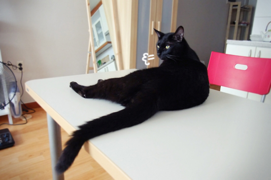
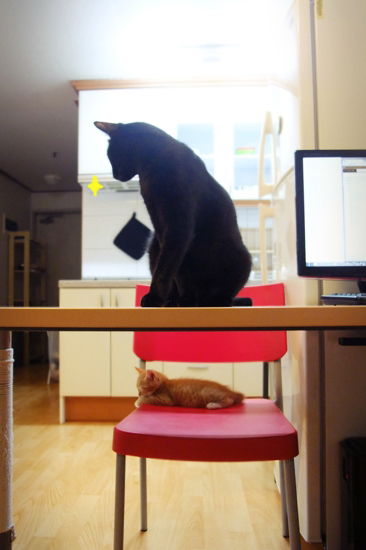
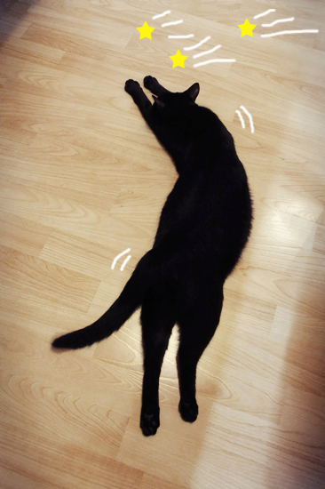
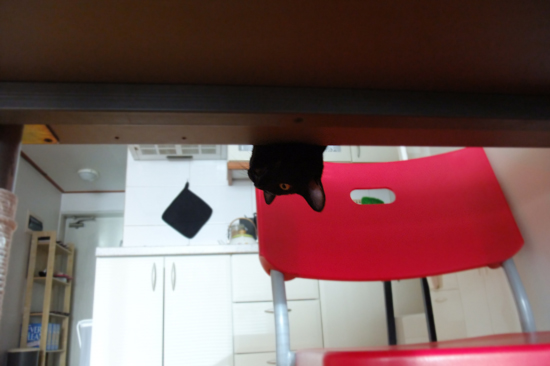
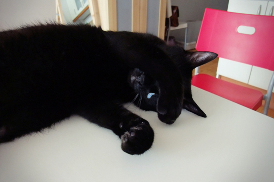
집사 녀석이 변했다.
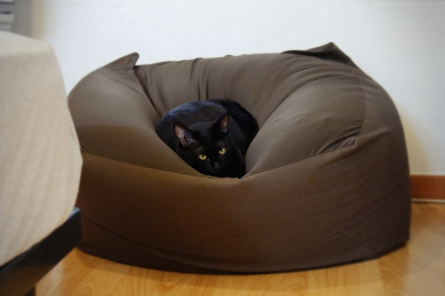
만날 내 꽁무니만 따라다니며 예쁘다고 난리더니
요 콩알만한 녀석을 데려오고 나서부터
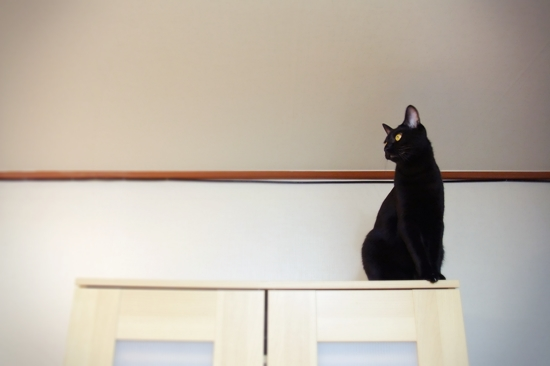
나한텐 1g도 신경쓰지 않는다.
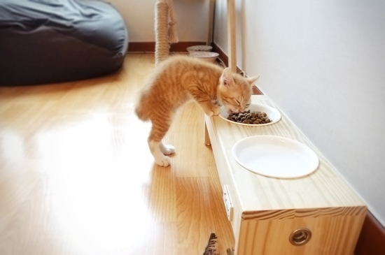
요 콩알은 내 밥도 뺏어 먹고
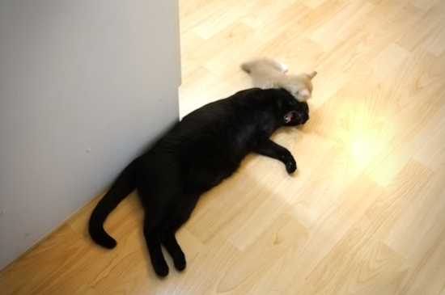
심지어 날 괴롭히기까지 하는데
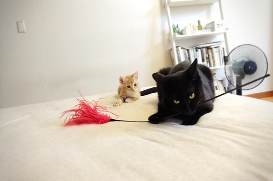
집사는 내가 형이니까 참으라고만 한다.
아이고, 기가 막히고 코가 막혀 디스코를 추겠네.
거꾸로 집사 입장이 되어 생각해봐도... 이럴 순 없는 거다.
아... 눈물이...
장난스럽게 재구성해본 이야기지만, 망고를 데려오고 나서 간장이 예전과 달라지긴 했다. 만날 놀아달라 간식 달라 조르고 상대해주지 않으면 책상 위에 올라와 방해하거나 깨물던 철부지였는데 망고의 등장을 계기로 함께 사는 것에 조금 눈뜨게 된 것 같다. 망고가 냥냥거리면 무슨 일인가 싶어 그릉대며 달려가 살펴보고, 화장실 다녀오면 그루밍도 해주고, 꼬리잡기하며 지분거려도 어느 정도는 너그럽게 봐주고 그런다.
요즘도 책상 위에 올라와 드러누워 버릴 때가 있긴 하지만 예전처럼 막무가내는 아니고 잠시 쓰다듬고 예뻐해 주면 고롱고롱거리다가 이내 내려가곤 한다. 드디어 간장이 어른이 된 걸까. 간혹 예전보다 내 손길을 심하게 느끼며 부비작대는 걸 보노라면 얘가 사랑이 고파 그러는 건가 싶어 마음이 짠하다.
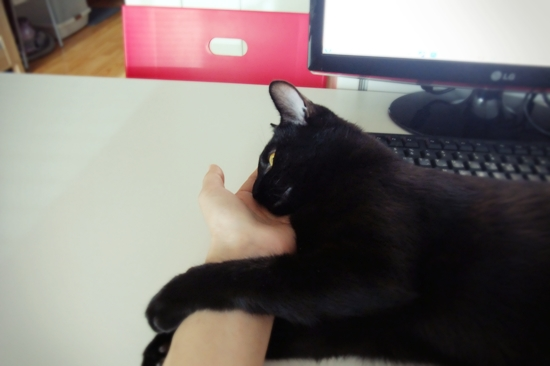
놓지 않겠다능.
+